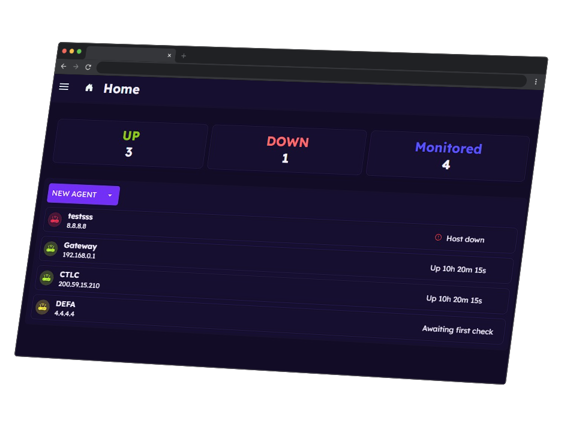

Keep Your Site Under Control
Ensure your website stays online and running smoothly with Elipticnet Web Monitor, a smart solution that monitors your site’s status in real time.
Our web monitoring agent continuously checks and reports on:
-
Server status:
Detects whether your site is responding correctly
-
Response time:
Measures how long it takes for your website to load
-
TTFB (Time to First Byte):
Tracks the delay between the request and the first byte received from the server.
-
Uptime:
Logs how long your website remains accessible without interruptions.
-
Content size:
Detects unexpected changes in your page’s content
